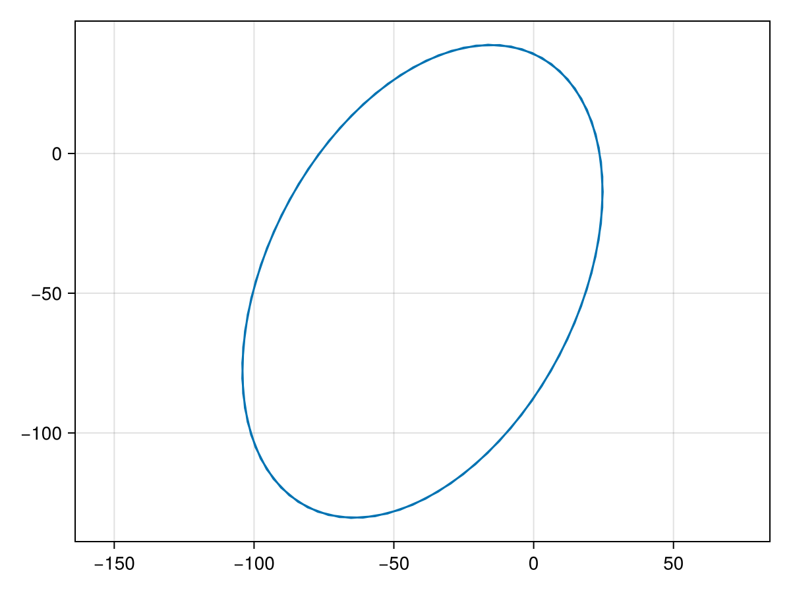
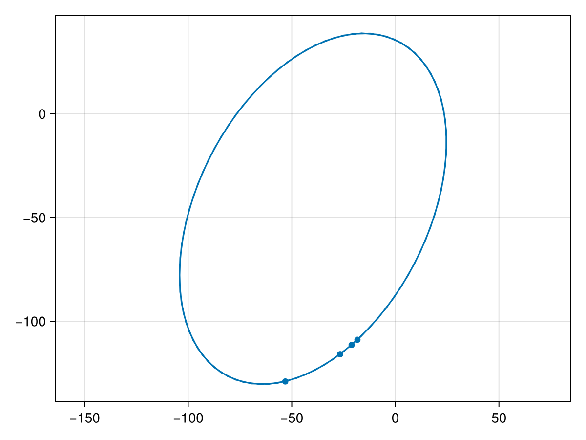
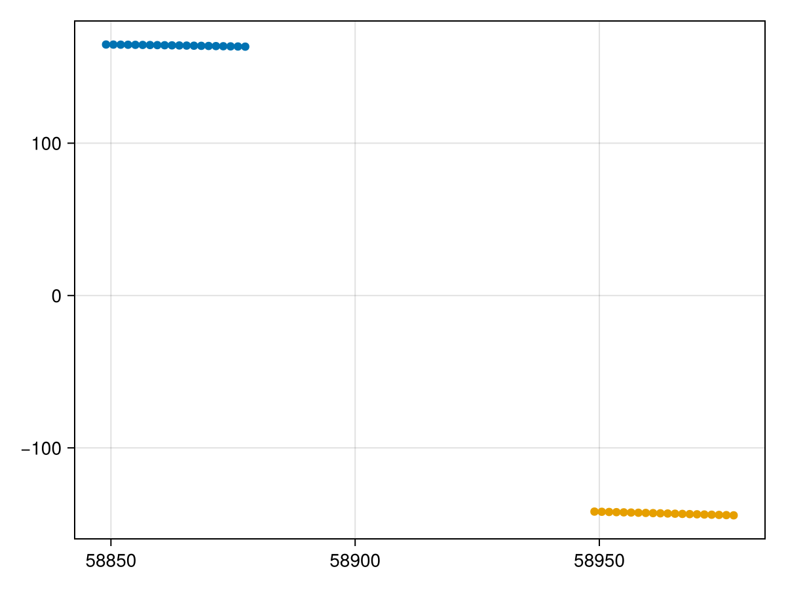
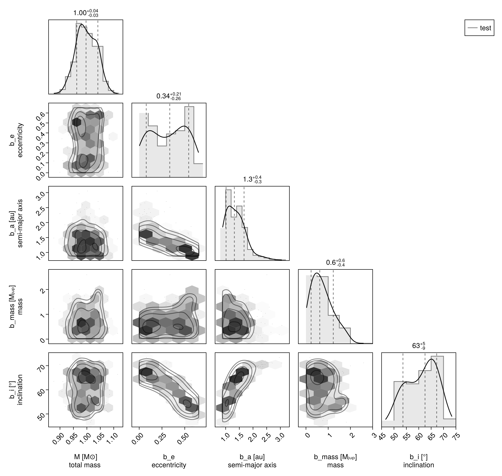
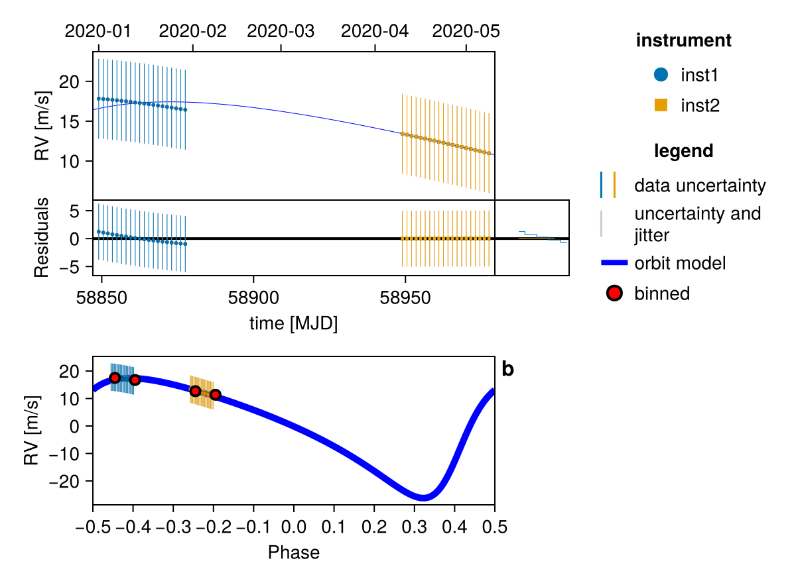
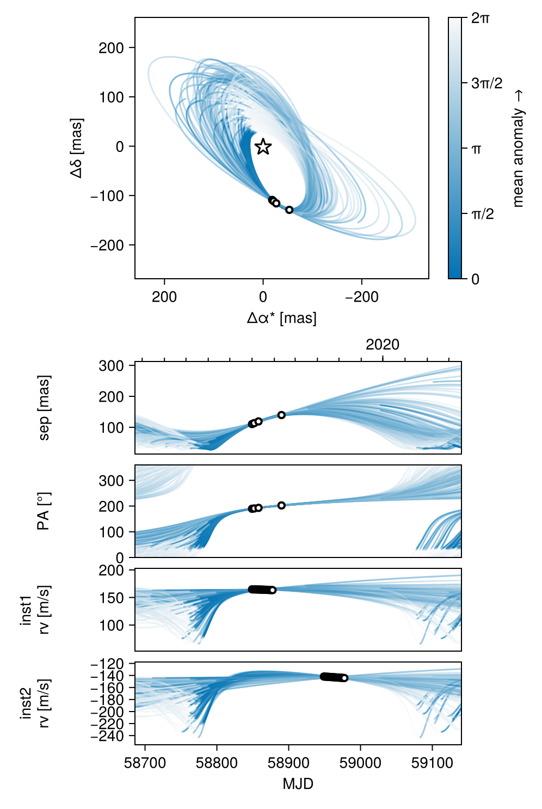

Fit Radial Velocity and Astrometry
You can use Octofitter to jointly fit relative astrometry data and radial velocity data. Below is an example. For more information on these functions, see previous guides.
Import required packages
using Octofitter
using OctofitterRadialVelocity
using CairoMakie
using PairPlots
using Distributions
using PlanetOrbitsWe now use PlanetOrbits.jl to create sample data. We start with a template orbit and record it's positon and velocity at a few epochs.
orb_template = orbit(
a = 1.0,
e = 0.7,
i= pi/4,
Ω = 0.1,
ω = 1π/4,
M = 1.0,
plx=100.0,
m =0,
tp =58829-40
)
Makie.lines(orb_template,axis=(;autolimitaspect=1))
Sample position and store as relative astrometry measurements:
epochs = [58849,58852,58858,58890]
astrom_dat = Table(
epoch=epochs,
ra=raoff.(orb_template, epochs),
dec=decoff.(orb_template, epochs),
σ_ra=fill(1.0, size(epochs)),
σ_dec=fill(1.0, size(epochs)),
cor=fill(0.0, size(epochs))
)
astrom = PlanetRelAstromLikelihood(
astrom_dat,
name = "simulated",
variables = @variables begin
# Fixed values for this example - could be free variables:
jitter = 0 # mas [could use: jitter ~ Uniform(0, 10)]
northangle = 0 # radians [could use: northangle ~ Normal(0, deg2rad(1))]
platescale = 1 # relative [could use: platescale ~ truncated(Normal(1, 0.01), lower=0)]
end
)PlanetRelAstromLikelihood Table with 6 columns and 4 rows:
epoch ra dec σ_ra σ_dec cor
┌────────────────────────────────────────────
1 │ 58849 -18.3017 -108.907 1.0 1.0 0.0
2 │ 58852 -21.1181 -111.432 1.0 1.0 0.0
3 │ 58858 -26.6349 -115.889 1.0 1.0 0.0
4 │ 58890 -53.1334 -129.043 1.0 1.0 0.0And plot our simulated astrometry measurments:
fig = Makie.lines(orb_template,axis=(;autolimitaspect=1))
Makie.scatter!(astrom.table.ra, astrom.table.dec)
fig
Generate a simulated RV curve from the same orbit:
using Random
Random.seed!(1)
epochs = 58849 .+ range(0,step=1.5, length=20)
planet_sim_mass = 0.001 # solar masses here
rvlike = MarginalizedStarAbsoluteRVLikelihood(
Table(
epoch=epochs,
rv=radvel.(orb_template, epochs, planet_sim_mass) .+ 150,
σ_rv=fill(5.0, size(epochs)),
),
name="inst1",
variables=@variables begin
jitter ~ LogUniform(0.1, 100) # m/s
end
)
epochs = 58949 .+ range(0,step=1.5, length=20)
rvlike2 = MarginalizedStarAbsoluteRVLikelihood(
Table(
epoch=epochs,
rv=radvel.(orb_template, epochs, planet_sim_mass) .- 150,
σ_rv=fill(5.0, size(epochs)),
),
name="inst2",
variables=@variables begin
jitter ~ LogUniform(0.1, 100) # m/s
end
)
fap = Makie.scatter(rvlike.table.epoch[:], rvlike.table.rv[:])
Makie.scatter!(rvlike2.table.epoch[:], rvlike2.table.rv[:])
fap
Now specify model and fit it:
planet_b = Planet(
name="b",
basis=Visual{KepOrbit},
likelihoods=[astrom],
variables=@variables begin
e ~ Uniform(0,0.999999)
a ~ truncated(Normal(1, 1),lower=0.1)
mass ~ truncated(Normal(1, 1), lower=0.)
i ~ Sine()
M = system.M
Ω ~ UniformCircular()
ω ~ UniformCircular()
θ ~ UniformCircular()
tp = θ_at_epoch_to_tperi(θ, 58849.0; M, e, a, i, ω, Ω) # reference epoch for θ. Choose an MJD date near your data.
end
)
sys = System(
name="test",
companions=[planet_b],
likelihoods=[rvlike, rvlike2],
variables=@variables begin
M ~ truncated(Normal(1, 0.04),lower=0.1) # (Baines & Armstrong 2011).
plx = 100.0
end
)
model = Octofitter.LogDensityModel(sys)
using Random
rng = Xoshiro(0) # seed the random number generator for reproducible results
results = octofit(rng, model, max_depth=9, adaptation=300, iterations=400)Chains MCMC chain (400×35×1 Array{Float64, 3}):
Iterations = 1:1:400
Number of chains = 1
Samples per chain = 400
Wall duration = 6.39 seconds
Compute duration = 6.39 seconds
parameters = M, plx, inst1_jitter, inst2_jitter, b_e, b_a, b_mass, b_i, b_Ωx, b_Ωy, b_ωx, b_ωy, b_θx, b_θy, b_Ω, b_ω, b_θ, b_M, b_tp, b_simulated_jitter, b_simulated_northangle, b_simulated_platescale
internals = n_steps, is_accept, acceptance_rate, hamiltonian_energy, hamiltonian_energy_error, max_hamiltonian_energy_error, tree_depth, numerical_error, step_size, nom_step_size, is_adapt, loglike, logpost, tree_depth, numerical_error
Summary Statistics
parameters mean std mcse ess_bulk ess_ta ⋯
Symbol Float64 Float64 Float64 Float64 Float ⋯
M 0.9983 0.0382 0.0027 201.3532 190.51 ⋯
plx 100.0000 0.0000 NaN NaN N ⋯
inst1_jitter 0.4410 0.3644 0.0276 58.3856 20.43 ⋯
inst2_jitter 0.4602 0.4112 0.0353 81.5619 28.79 ⋯
b_e 0.3179 0.1983 0.0412 25.5367 62.55 ⋯
b_a 1.3728 0.3676 0.0691 27.5522 72.63 ⋯
b_mass 0.7194 0.4764 0.0980 19.2092 96.08 ⋯
b_i 1.0657 0.1066 0.0213 24.3593 57.73 ⋯
b_Ωx 0.8195 0.1341 0.0216 39.9950 115.71 ⋯
b_Ωy 0.5189 0.1663 0.0309 27.4989 37.21 ⋯
b_ωx 0.4908 0.6302 0.1388 25.3583 104.93 ⋯
b_ωy 0.2547 0.5759 0.1007 36.0822 103.25 ⋯
b_θx -0.9890 0.0985 0.0076 173.4487 236.33 ⋯
b_θy -0.1663 0.0176 0.0013 184.9064 331.41 ⋯
b_Ω 0.5641 0.1953 0.0369 26.3904 55.99 ⋯
b_ω 0.4428 1.1560 0.1580 47.8147 64.66 ⋯
b_θ -2.9750 0.0058 0.0005 175.8458 48.82 ⋯
⋮ ⋮ ⋮ ⋮ ⋮ ⋮ ⋱
3 columns and 5 rows omitted
Quantiles
parameters 2.5% 25.0% 50.0% 75.0% ⋯
Symbol Float64 Float64 Float64 Float64 ⋯
M 0.9283 0.9706 0.9970 1.0273 ⋯
plx 100.0000 100.0000 100.0000 100.0000 ⋯
inst1_jitter 0.1004 0.1714 0.3073 0.6027 ⋯
inst2_jitter 0.1007 0.1814 0.3310 0.5652 ⋯
b_e 0.0096 0.1240 0.3353 0.5024 ⋯
b_a 0.9234 1.0718 1.3192 1.5731 ⋯
b_mass 0.0725 0.3304 0.6210 0.9919 ⋯
b_i 0.8705 0.9677 1.0914 1.1531 ⋯
b_Ωx 0.5267 0.7385 0.8344 0.9173 ⋯
b_Ωy 0.2638 0.3885 0.4947 0.6345 ⋯
b_ωx -1.0498 0.2396 0.7877 0.9258 ⋯
b_ωy -0.8727 -0.2006 0.3367 0.7427 ⋯
b_θx -1.1834 -1.0545 -0.9807 -0.9176 ⋯
b_θy -0.2010 -0.1778 -0.1656 -0.1532 ⋯
b_Ω 0.2861 0.4036 0.5420 0.6700 ⋯
b_ω -2.3447 -0.2064 0.4169 1.1123 ⋯
b_θ -2.9853 -2.9792 -2.9754 -2.9715 ⋯
⋮ ⋮ ⋮ ⋮ ⋮ ⋱
1 column and 5 rows omitted
Display results as a corner plot:
octocorner(model,results, small=true)
Plot RV curve, phase folded curve, and binned residuals:
Octofitter.rvpostplot(model, results)
Display RV, PMA, astrometry, relative separation, position angle, and 3D projected views:
octoplot(model, results)